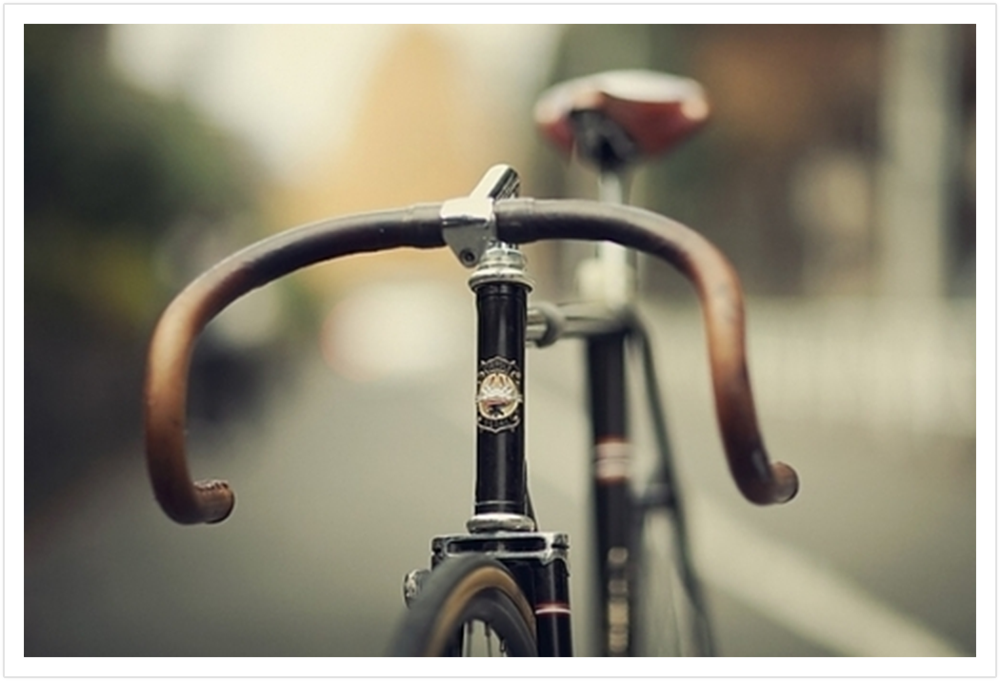
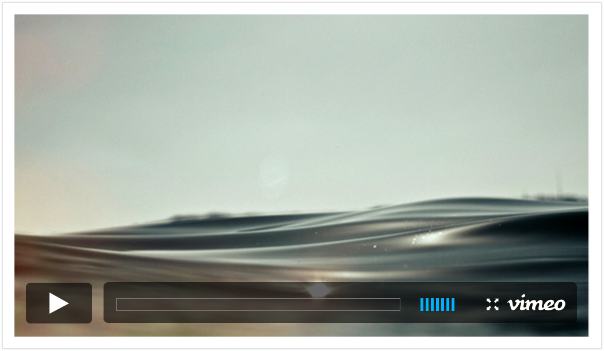

They are ill discoverers that think
there is no land, when they can see
nothing but sea.
there is no land, when they can see
nothing but sea.
Hello.
I am Harbour, a super-cool Tumblr theme for writers
who like to share their musings with the world.
I am Harbour, a super-cool Tumblr theme for writers
who like to share their musings with the world.
rocking horse
Do you remember the rocking horse
We played on as children? I do.
Its body was a plastic hollow,
Sturdy enough to carry the weight
Of our tiny frames. We would lock
In our trusting feet to its metal stirrups,
And away we would go, up and down,
On the spot, into the far off distance
In our heads. And ever since,
So it seems, I have been riding
The same old rocking horse, going
Nowhere, really, fixed in the same
Old motion, up and down, up and down,
Galloping across the vast
Expanse of my imagination to nowhere.
We played on as children? I do.
Its body was a plastic hollow,
Sturdy enough to carry the weight
Of our tiny frames. We would lock
In our trusting feet to its metal stirrups,
And away we would go, up and down,
On the spot, into the far off distance
In our heads. And ever since,
So it seems, I have been riding
The same old rocking horse, going
Nowhere, really, fixed in the same
Old motion, up and down, up and down,
Galloping across the vast
Expanse of my imagination to nowhere.
"Our love is in a coma, being kept alive artificially, by a ventilator of memories."

